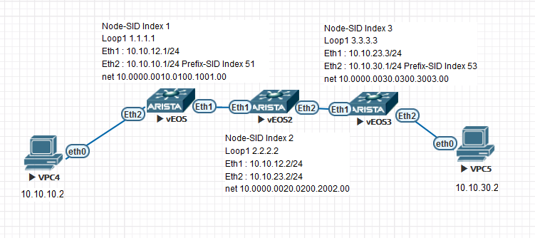

ISIS Segment routing basics for Arista EOS
References:
https://www.arista.com/en/um-eos/eos-section-35-3-is-is-segment-routing

SRGB
Segment Routing Golbal Block
Prefix-SID
It’s global and unique. It identify a prefix. It’s called anycast SID when it’s send by a group of router.
Node-SID
It’s global and unique. Only one per node. It identify the node.
Adjacent-SID
It’s local and can use a dynamique range. It’s used to identify an interconnection between 2 nodes.
With Arista EOS 4.23 it’s automaticaly allocated from the isis dynamic range show mpls label ranges.
Basic config for ARISTA
I have added the prefix-sid to test it end to end between the VPC but actually it can work without the prefix-sid. In the next article I will add the L3 VPN on top of SR without using prefix-sid In bold you find the ISIS-SR specific command require to enable ISIS-SR
R1
interface Loopback1
ip address 1.1.1.1/32
node-segment ipv4 index 1
isis enable ISIS-SR
!
interface Ethernet1
no switchport
ip address 10.10.12.1/24
isis enable ISIS-SR
!
interface Ethernet2
no switchport
ip address 10.10.10.1/24
isis enable ISIS-SR
!
ip routing
!
mpls ip
!
router isis ISIS-SR
net 10.0000.0010.0100.1001.00
is-type level-2
!
address-family ipv4 unicast
!
segment-routing mpls
no shutdown
prefix-segment 10.10.10.0/24 index 51
!
R2
interface Loopback1
ip address 2.2.2.2/32
node-segment ipv4 index 2
isis enable ISIS-SR
!
interface Ethernet1
no switchport
ip address 10.10.12.2/24
isis enable ISIS-SR
!
interface Ethernet2
no switchport
ip address 10.10.23.2/24
isis enable ISIS-SR
!
ip routing
!
mpls ip
!
router isis ISIS-SR
net 10.0000.0020.0200.2002.00
is-type level-2
!
address-family ipv4 unicast
!
segment-routing mpls
no shutdown
!
R3
interface Loopback1
ip address 3.3.3.3/32
node-segment ipv4 index 3
isis enable ISIS-SR
!
interface Ethernet1
no switchport
ip address 10.10.23.3/24
isis enable ISIS-SR
!
interface Ethernet2
no switchport
ip address 10.10.30.1/24
isis enable ISIS-SR
!
ip routing
!
mpls ip
!
router isis ISIS-SR
net 10.0000.0030.0300.3003.00
is-type level-2
!
address-family ipv4 unicast
!
segment-routing mpls
no shutdown
prefix-segment 10.10.30.0/24 index 53
!
show commands
R1#show isis segment-routing System ID: R1 Instance: ISIS-SR SR supported Data-plane: MPLS SR Router ID: 1.1.1.1 SR Global Block( SRGB ): Base: 900000 Size: 65536 Adj-SID allocation mode: SR-adjacencies Adj-SID allocation pool: Base: 100000 Size: 16384 All Prefix Segments have : P:0 E:0 V:0 L:0 IS-IS Reachability Algorithm : SPF (0) Number of IS-IS segment routing capable peers: 2 Self-Originated Segment Statistics: Node-Segments : 1 Prefix-Segments : 1 Proxy-Node-Segments : 0 Adjacency Segments : 1
R1#show mpls segment-routing bindings 1.1.1.1/32 Local binding: Label: imp-null Remote binding: Peer ID: 0020.0200.2002, Label: 900001 2.2.2.2/32 Local binding: Label: 900002 Remote binding: Peer ID: 0020.0200.2002, Label: imp-null 3.3.3.3/32 Local binding: Label: 900003 Remote binding: Peer ID: 0020.0200.2002, Label: 900003 10.10.10.0/24 Local binding: Label: imp-null Remote binding: Peer ID: 0020.0200.2002, Label: 900051 10.10.30.0/24 Local binding: Label: 900053 Remote binding: Peer ID: 0020.0200.2002, Label: 900053
R1#show isis segment-routing prefix-segments
System ID: 0010.0100.1001 Instance: 'ISIS-SR'
SR supported Data-plane: MPLS SR Router ID: 1.1.1.1
Node: 3 Proxy-Node: 0 Prefix: 2 Total Segments: 5
Flag Descriptions: R: Re-advertised, N: Node Segment, P: no-PHP
E: Explicit-NULL, V: Value, L: Local
Segment status codes: * - Self originated Prefix, L1 - level 1, L2 - level 2
Prefix SID Type Flags System ID Level Protection
------------------------- ----- ---------- ----------------------- --------------- ----- ----------
* 1.1.1.1/32 1 Node R:0 N:1 P:0 E:0 V:0 L:0 0010.0100.1001 L2 unprotected
2.2.2.2/32 2 Node R:0 N:1 P:0 E:0 V:0 L:0 0020.0200.2002 L2 unprotected
3.3.3.3/32 3 Node R:0 N:1 P:0 E:0 V:0 L:0 0030.0300.3003 L2 unprotected
* 10.10.10.0/24 51 Prefix R:0 N:0 P:0 E:0 V:0 L:0 0010.0100.1001 L2 unprotected
10.10.30.0/24 53 Prefix R:0 N:0 P:0 E:0 V:0 L:0 0030.0300.3003 L2 unprotected
R1#show isis segment-routing adjacency-segments
System ID: R1 Instance: ISIS-SR
SR supported Data-plane: MPLS SR Router ID: 1.1.1.1
Adj-SID allocation mode: SR-adjacencies
Adj-SID allocation pool: Base: 100000 Size: 16384
Adjacency Segment Count: 1
Flag Descriptions: F: Ipv6 address family, B: Backup, V: Value
L: Local, S: Set
Segment Status codes: L1 - Level-1 adjacency, L2 - Level-2 adjacency, P2P - Point-to-Point adjacency, LAN - Broadcast adjacency
Locally Originated Adjacency Segments
Adj IP Address Local Intf SID SID Source Flags Type
--------------- ----------- ------- ------------ --------------------- --------
10.10.12.2 Et1 100000 Dynamic F:0 B:0 V:1 L:1 S:0 LAN L2
Protection
-----------
unprotected